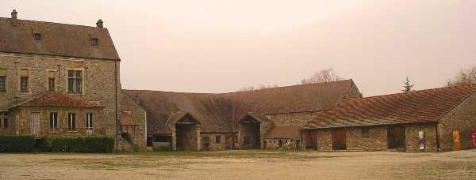
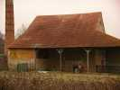
Derrière la ferme, une mystérieuse usine agricole désaffectée dont l'auvent nous abritera du vent, éventuellement de la pluie, voire du soleil. Les 2 derniers, y en a pas eu, mais le vent largement assez pour la température montant vers -0,5° à 13 heures...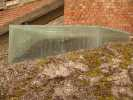
Au pied de la cheminée, une construction encore plus mal définie que l'usine, en verre et semi-enterrée. Probablement une espèce de séchoir qui récupérait la chaleur de la cheminée, mais pourquoi vitré et pourquoi enterré ? Si vous connaissez la solution, satisfaites ma curiosité ! (voir Note in fine).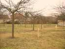
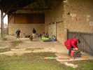
Bon, revenons au cerf-volant. Il y aura une dizaine de participants dans la journée, par roulement. Difficile en effet de rester dehors plus de 5 h par cette température... De G à D : Eric, mon sac et Logos, Daniel Durieux, et Georges (Jojo, pour les intimes).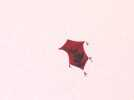
C'est Georges qui a monté le plus de cerfs-volants dont ce Rokkaku rouge à pompons, très chinois.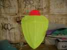
On a vu aussi les bannières CVCF/IdF réalisées, avec une 1/2 Tour Eiffel, etc. comme dans le Lucane. Et la coccinelle de 1 m prototype qui a bien volé, mais sera encore modifiée pour que l'arrière ne soit pas pointu en vol.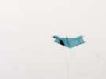
A midi, pique-nique sous l'auvent ! Vous avez déjà pique-niqué dehors par -0,5° ? On ne traîne pas à table, et Daniel remet son Rokkaku en l'air pour se remuer...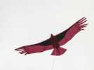
Moi, mon Albatros2, après avoir tenu toute la matinée, est rentré tout seul, une canne s'étant déboîtée en vol ce qui altère beaucoup les qualités... Alors je sors courageusement mon Condor, qui a toujours des plumes qui rebiquent...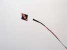
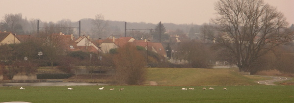